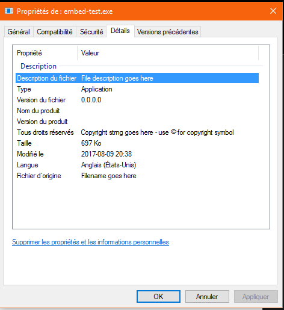

Embedding resources
This section explains how to read or write data embedded in the executable.
Embedding resources into an executable is not a feature of NWG and it will never be. Hopefully, there is already a
library that can achieve this (and it has a very nice name).
rust-embed-resource is build script library to handle compilation and inclusion
of Windows resources, in the most resilient fashion imaginable
For this example, a VERSIONINFO resource file will be embedded into a NWG executable. A version info defines the data about the executable such
as the company name, the copyrights, the product version, etc... For more information, see the official documentation:
https://msdn.microsoft.com/en-us/library/windows/desktop/aa381058(v=vs.85).aspx
(you will need it)
The first step is to write the version info to a file. Here's a dummy file that works:
1 VERSIONINFO
FILEVERSION 0, 0, 0, 0
PRODUCTVERSION 0, 0, 0, 0
FILEOS 0x00040004L
FILETYPE 0x00000001L
{
BLOCK "StringFileInfo"
{
BLOCK "040904E4"
{
VALUE "CompanyName", "Company name goes here\000"
VALUE "FileDescription", "File description goes here\000"
VALUE "FileVersion", "Version info goes here\000"
VALUE "InternalName", "Internal name goes here\000"
VALUE "LegalCopyright", "Copyright strng goes here - use \251 for copyright symbol\000"
VALUE "OriginalFilename", "Filename goes here\000"
}
}
BLOCK "VarFileInfo"
{
VALUE "Translation", 1033, 1252
}
}
The second is to add
embed-resource to the build-dependencies and a
build target (if there isn't one already) to the project:
[package]
name = "embed-test"
version = "0.1.0"
build = "build.rs"
[dependencies]
native-windows-gui = "0.3.0"
[build-dependencies]
embed-resource = "1.1"
Then add modify
build.rs so that it compiles the resource:
extern crate embed_resource;
use std::env;
fn main() {
embed_resource::compile("versioninfo.rc");
}
Finally, something like this comes out:

Support for reading embed resources is planned to be implemented before the first stable release. It will use the resource system.